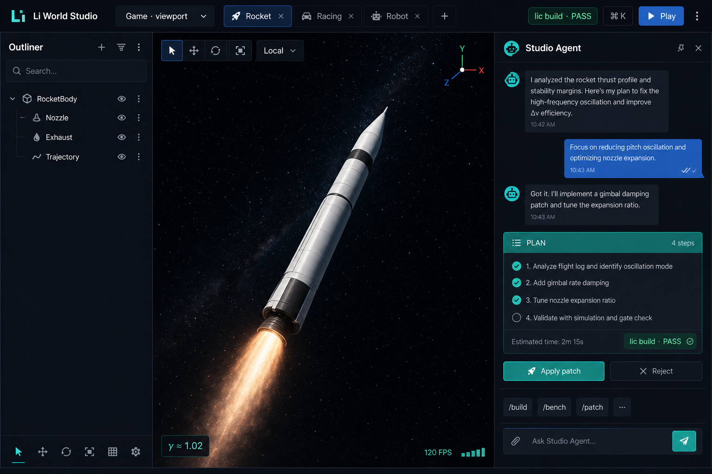
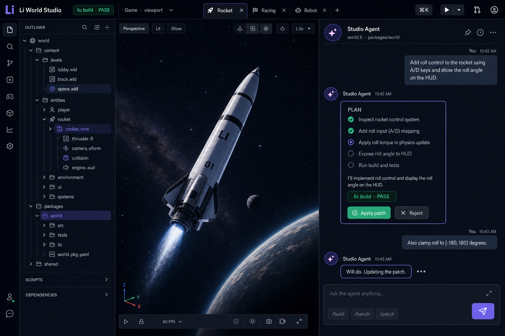
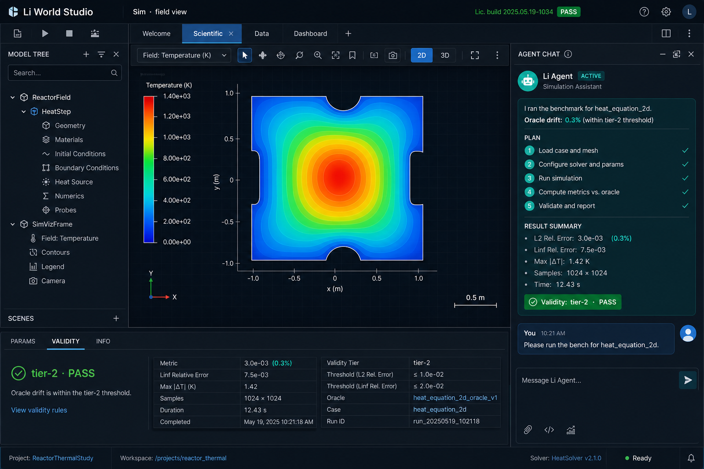
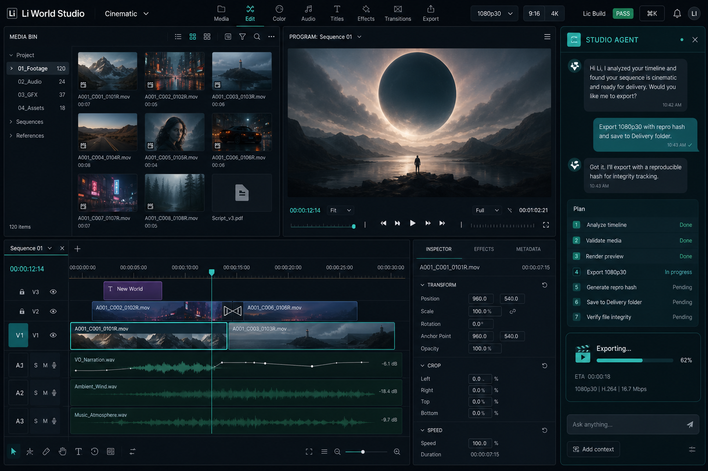
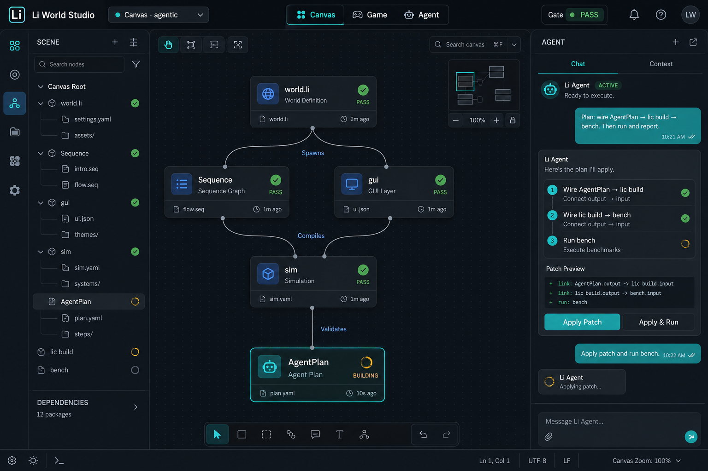
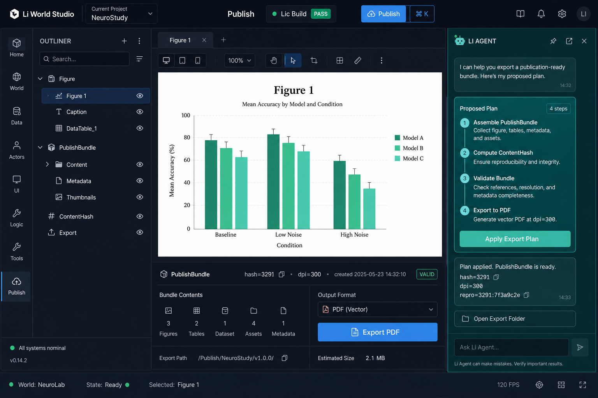

Li World Studio — preview
v2 mocks (teal agent · no violet) + interactive demo reel
Demo video (auto-cycles verticals)
Re-record: ./scripts/record-studio-demo.sh
v2 concept art

Game · viewport + agent dock

Agent dock detail

Scientific · validity

Cinematic · 4-panel NLE

Agentic canvas

Publish · bundle hash